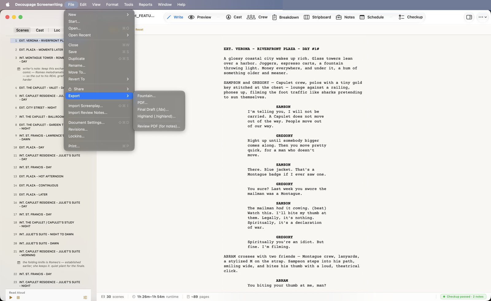
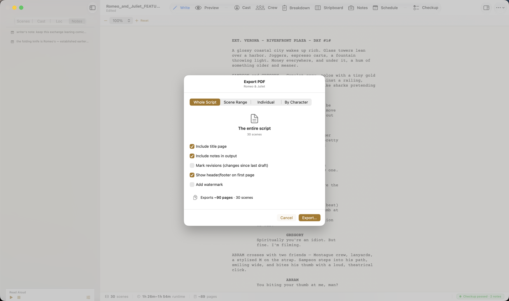
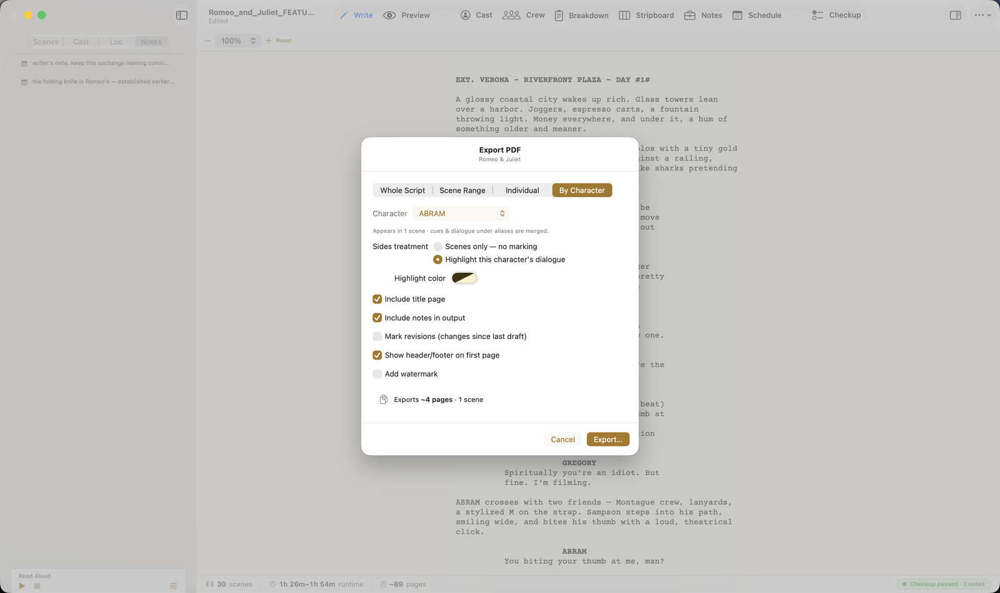
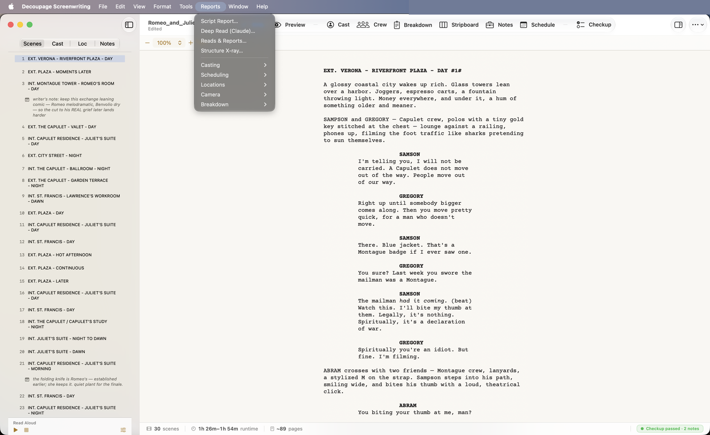
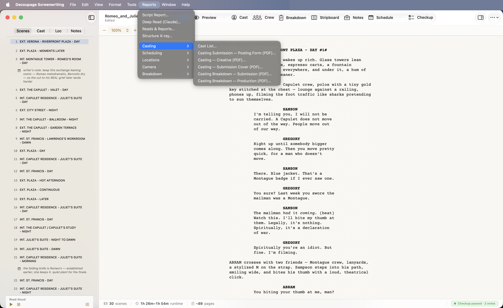

Exporting the script
File → Export hands your screenplay to other tools and formats:

- PDF — a print-ready screenplay (the most common export).
- Fountain (
.fountain) — plain-text, opens anywhere. - Final Draft (
.fdx) and Highland (.highland) — hand the script to those apps. - Review PDF (for notes) — a fillable PDF a reader can annotate and send back.
The PDF Export sheet
Choosing PDF opens a sheet where you decide exactly what to print. The scope picker is the key control:

- Whole Script — the entire screenplay.
- Scene Range — from one scene to another.
- Individual — hand-pick scenes from a checklist.
- By Character — everything a character is in, merged — i.e. an actor's sides.
Common options apply across scopes: Include title page, Include notes, Mark revisions (changes since your last draft), and Add watermark. The footer shows the page count live before you export.
By Character adds a Sides treatment — highlight that character's dialogue in a color of your choice, so an actor's lines jump off the page:

Production reports
The Reports menu turns your breakdown, cast, and schedule into the paperwork a production runs on. (The AI reads at the top — Script Report, Deep Read, Reads & Reports, Structure X-ray — open the cloud AI features; see AI in Decoupage.)

Below the reads, reports are grouped by department — Casting, Scheduling, Locations, Camera, Breakdown — each producing PDFs (and often CSVs) built from what you've entered:

A few of the things you can generate:
- Casting — Cast List (PDF / Markdown / CSV), casting submission posting form, submission cover, and casting breakdowns.
- Scheduling — Call Sheets, Day-out-of-Days, the Shooting Schedule (with real dates + days-of-week once you've set a Shoot Calendar in the Schedule tab).
- Locations — a location list from your consolidated locations.
- Camera — shot lists from the breakdown.
- Breakdown — scene breakdown sheets, department pull lists, background reports.
Each of these you can also reach from the relevant tab's own Export menu (the Cast tab exports cast lists, the Breakdown tab exports breakdown sheets, and so on) — same reports, two doors.
Previewing before you save
PDF reports open in a preview first, with Print…, Export…, and Done — so you see the document before committing it to a file. Reports that are really spreadsheets (CSVs) open as a table with an Export… button.
- ✓File → Export = the script out as PDF / Fountain / Final Draft / Highland, or a Review PDF for notes.
- ✓PDF Export has four scopes — Whole Script / Scene Range / Individual / By Character; By Character makes highlighted sides.
- ✓Reports turns your breakdown/cast/schedule into department paperwork (Casting, Scheduling, Locations, Camera, Breakdown) as PDF/CSV — also on each tab's own Export menu.
- ✓Reports preview before they save.